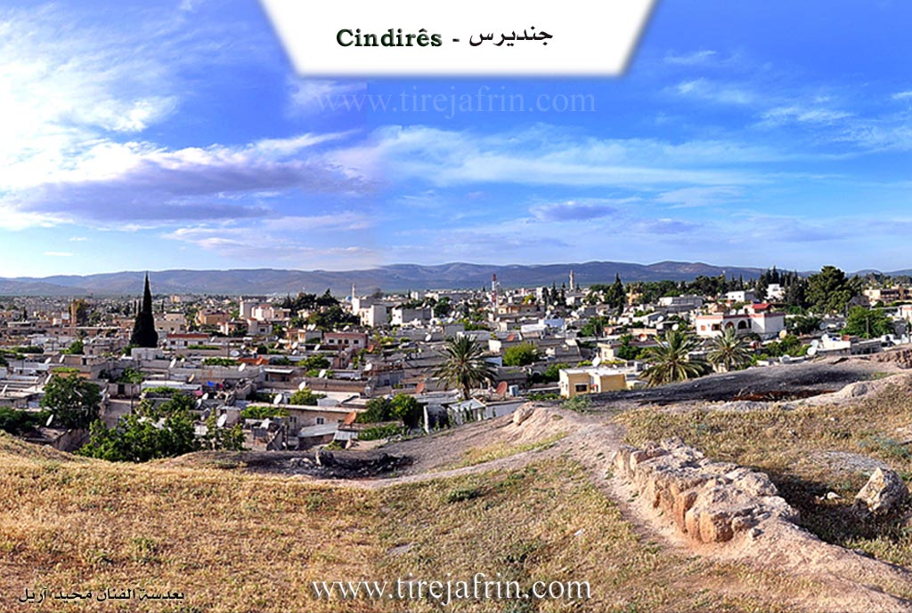
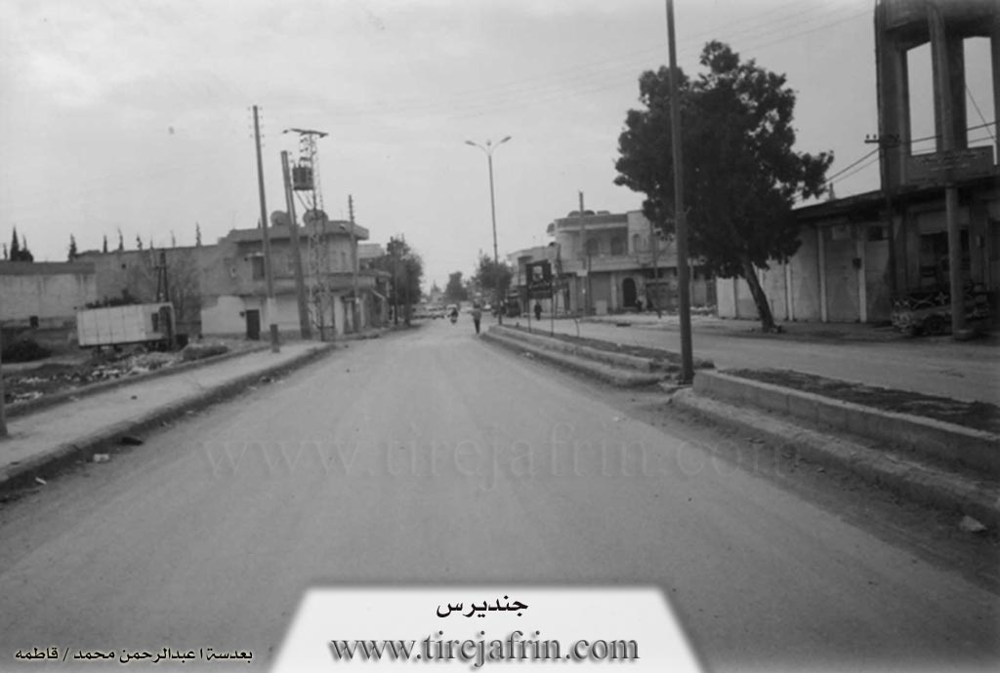

General Information
Nahiya (Subdistrict)
Cindires
Also Known As
Cindires, Cindirês, Gindaros, Jindriyus, جنديرس, جندیرس, جنديريس
Families, Clans, etc.
Hac Qadir, Hûto, Kerîm, Murad Ehmed, Nûrî Berekat, Nûrî Erbo, Qere Hesen, Qitêrş, Tûbal, Xurşîd

Photos


Basic Information about Cindirês
Source: Tirej Afrin
Etymology: Multiple theories exist: 1) 'Jund' (military division) + 'Iris' (Roman commander). 2) Named after the monk Cindaros (Gindaros). 3) From Aramaic 'Jandra' (pride/arrogance) or 'Jundra' (rocky obstacle). 4) Folk etymology: 'Candris', where a ruler exhausted the people carrying earth to the hill, leading to the name derived from body/soul (Can) + death/ruin (Dris).
Foundation Date/Period: Ancient times; current village structure approx. 500 years old; Temple built early 4th century AD
Hills: Girê Cindirs, Girê Selor
Ruins: Girê Cindirs
Wells: Bîra Kefersefrê
Other Landmarks: Deşta Cûmê, Çemê Efrîn
Summaries
I. Summary from TirejAfrin Site (English) of Cindirês
Source: https://www.tirejafrin.com/site/kura%20afrin%20Cindires%20-%20Cindires.htm
It is stated in the book جبل الكرد (عفرين) دراسة جغرافية Çiyayê Kurmênc (Efrîn): A Geographical Study by د. محمد عبدو علي Dr. Mihemed Ebdo Elî: Cindirs, /10599 inhabitants - 231m elevation/:
Opinions vary regarding the meaning of the name Cindirs, and we will list the most important ones here:
The "Syrian Geographical Dictionary" states that it is a compound name made of two words: "Jund," which is an Islamic military division, and "Iris," which is the name of a Roman commander, making the name "Jund Iris." There is another opinion that says it is the name of the monk "Cindaros" (Gindaros), and a temple was built in Cindirs in the first quarter of the fourth century AD in honor of the monk Cindaros, which is the oldest temple in Antioch.
As for the researcher Abdullah Hilu (p. 201), he says: The name Cindirs appears in Greek sources as Gindaros, and in Syriac as Jendaryos. The difficulty here lies in knowing if the name was anciently pronounced with an open vowel at the beginning; in this case, it would go back to an older Aramaic form, "Jandra," meaning: pride, vanity, and arrogance, which is valid as a metaphorical meaning for a village name. However, the name in Greek sources as Gindaros reflects a pronunciation with a broken vowel at the beginning, as it is in the Arabic pronunciation. It is more correct that the Arabic pronunciation of the name is an imitation of the Greek form. This could either be an imprecise pronunciation of the Syriac form, or perhaps an imprecise pronunciation of another Aramaic derivation with a closed vowel at the beginning, which is "Jundra," meaning: a rocky obstacle. This is also a possible probability. However, as is well known, the location of Cindirs is a plain with alluvial soil, and there are no rocks in it at all. We do not believe that its location in the middle of the plain indicates a rocky obstacle or arrogance, and therefore we believe that the Aramaic formula is unlikely.
However, we believe that these researchers went too far when they did not hear the folk narrative about the origin of the name Cindirs, which says: The name is Kurdish, and it has a story that one of its rulers in ancient times forced the inhabitants to transport soil to the hill located next to the town. He assigned a specific amount to each family, so the hard labor continued for a long time, exhausting the people and spreading ruin in the conditions of the village inhabitants, until it was named the village of "Candris." This is a compound Kurdish word consisting of: Can meaning body or soul, and Dris meaning death and ruin. Thus, the naming is Kurdish with a historical narrative, and it is still said in Cindirs that a certain family owes such-and-such a load of soil.
The site of the town of Cindirs has been inhabited since ancient times, and it is located on the Riya Romanî (Roman road) that used to connect the ancient city of Cyrrhus with Antioch. Fertile plains surround Cindirs, containing many springs, and the Çemê Efrîn (Afrin river) passes 5km to its south, which made its location one of the ancient settlement centers in the southern part of Deşta Cûmê (Plain of Juma). The town of Cindirs developed from a small village that was north of Girê Cindirs into a large, prosperous town. Its houses are spread along perpendicular streets amidst a vast flat area rippling with olive trees. Cindirs is connected to the city of Efrîn by a paved road 20km long. Cindirs enjoys significant economic activity compared to other towns in the Efrîn region, and significant migration to it from neighboring villages is observed. Most of its inhabitants work in agriculture, especially olives. It contains many diverse commercial shops and olive presses, in addition to carpentry and blacksmithing trades, workshops for maintaining agricultural machinery and vehicles, and construction supplies. It has a weekly market held every Monday.
It is stated in the book عفرين .... نهرها وروابيها الخضراء Efrîn... Her River and Her Green Hills by the writer عبدالرحمن محمد Ebdulrehman Mihemed from the village of Qetme:
Cindirs: Cindirs is in Çiyayê Kurmênc and the Deşta Cindirs (Plain of Cindirs). It follows the Efrîn region, Heleb governorate. It is a large and ancient town, inhabited and located on the Riya Romanî (Roman road) that used to pass through it to Nebî Hûrî and Antioch. The town is located amidst fertile plains at an altitude of 231m. Around it are many springs, and the Çemê Efrîn (Afrin river) passes 5km to the south.
It is bordered to the north by a fertile agricultural plain planted with olive trees and orchards, and the villages of Yalanqoz, Kefersefrê, and Kûran.
To the south, it is bordered by a fertile plain, the valley of the Çemê Efrîn (Afrin river), and the villages of Medaya, Mihemediye, and Girê Selor.
To the west, there is a fertile agricultural plain planted with olive trees, the Riya Hemamê (Hamam road), the Lîwa Iskenderûn (Sanjak of Alexandretta), and the villages of Axcelê and Hec Iskender.
To the east, there is a fertile plain, the nearby farm of Refetiyê, and the villages of Hemîlk and Hacîler.
The number of its houses is about 1400, and its age is about 500 years. It was previously a small village around the archaeological Girê Cindirs located on the southern side of the town. Cindirs took its name, according to the account of one of the village residents, from a Roman leader named (Jana Eros), and it was merely a small village near an archaeological hill.
Current Cindirs is a large town whose houses are spread consistently along perpendicular streets over a wide, flat area amidst a vast plain rippling with olive trees. Its buildings have reached the village of Yalanqoz in the north. Its population, according to civil registry records at the end of 2004, was about 10,200 people, though the population is much larger due to dense migration from the villages of the sub-district. Its old houses are stone and mud with wooden roofs, while the modern ones are of cement and stone. Among its most important streets is the main street extending from east to west, passing through the center of the town, which is Kolana Şehîd Basil El-Esed (Martyr Basil al-Assad street).
An electricity and water network is available; it draws its water from an artesian well dug in the neighboring village of Kefersefrê. It has several primary, preparatory, and secondary schools, a health center, a municipality house, a police station, a sub-district director, a farmers' association, a party division, a telephone center, and an agricultural extension unit. It has several modern olive presses, especially the olive press located on the western side of the town. There are several commercial and service shops for the town for various professions, such as the Hal market for selling agricultural products. The village connects with all its villages and the district center via paved roads reaching all neighboring villages and the center of the sub-district and region.
The population of the Cindirs sub-district is 60,622 people. Among its most important families are the family of Nûrî Erbo, Nûrî Berekat, the Tûbal family, the Qitêrş family (Hac Qadir), the Xurşîd family, the Kerîm family, the Hûto family, the Qere Hesen family, and the Murad Ehmed family.
Cindirs is the town for the center of the sub-district located in the middle of its villages. It is bordered to the west by the Turkish border, to the south by the Idlib governorate and the Cebel Seman area, to the north and west by the sub-districts of Mabeta and Şiyê, and to the east by the town of Efrîn. Following Cindirs are 33 villages and 29 farms with an area of 32,510 hectares. It contains the sub-district directorate, a police station, a city council, a commercial market, shops of all professions, a telephone center, a cultural center, and a car garage. Cindirs enjoys notable economic activity relative to other sub-districts. It is an agricultural town whose inhabitants work in agriculture, especially olive cultivation and some economic crops such as wheat, sugar beet, sunflower seeds, and others on the banks of the Çemê Efrîn (Afrin river). A weekly market is held there every Monday. The population of the Cindirs sub-district reaches 60,622 people.
Village Mukhtars: Ednan Xelîl Hûto - Mihemed Hesen Hesen.
Sources
Book: جبل الكرد (عفرين) دراسة جغرافية Çiyayê Kurmênc (Efrîn): A Geographical Study by د. محمد عبدو علي Dr. Mihemed Ebdo Elî.
Book: عفرين .... نهرها وروابيها الخضراء Efrîn... Her River and Her Green Hills by عبدالرحمن محمد Ebdulrehman Mihemed from the village of Qetme.
Studies of Navenda Tirej Soft / Ebdulrehman Hacî Osman.
Some residents of the villages.
Preparation and Execution:
Site Manager of Tirej Afrin: Ebdulrehman Hacî Osman
20/12/2013
Foundation/Origin Information of Cindirês
Located on the Roman road connecting Cyrus with Antioch. It developed from a small village north of Cindirês hill into a large town.
Source: TirejAfrin Site
Possible Village Name Meaning of Cindirês
Multiple theories: 1) From "Jand" (Islamic military division) and "Eres" (a Roman leader). 2) From the monk "Jindaros". 3) From Greek "Gindaros" or Syriac "Jindriyus". 4) From Aramaic "Jindra" (pride/horses) or "Jindra" (rocky knot). 5) A Kurdish folk narrative suggests "Jan Dêris" (body/soul + death/destruction) from a story of forced labor.
Source: TirejAfrin Site
V. Links
- Tirej Afrin:
https://www.tirejafrin.com/site/kura%20afrin%20Cindires%20-%20Cindires.htm - Local FB page:
https://www.facebook.com/moshtakeen.ia.jendeirs - Link:
https://www.facebook.com/profile.php?id=100064866513203 - Drone video:
https://www.youtube.com/watch?v=_SOPXlLQYOw - 3D aerial photo:
https://www.facebook.com/photo.php?fbid=216130980915455&set=pb.100075556642769.-2207520000.&type=3 - Video:
https://www.youtube.com/watch?v=xtTZH7_2bS8 - Link:
https://www.youtube.com/watch?v=JwMq7qAp6tI - Link:
https://www.youtube.com/watch?v=pvFAK5EI76o - Link:
https://www.youtube.com/watch?v=NxOfKEdWynU